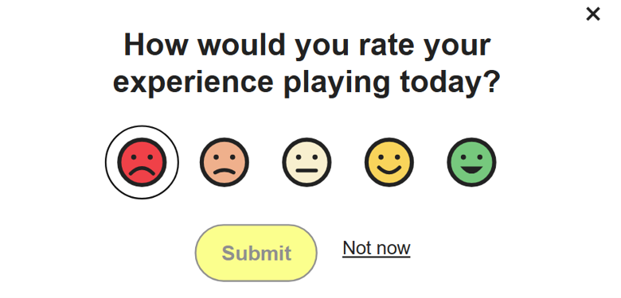
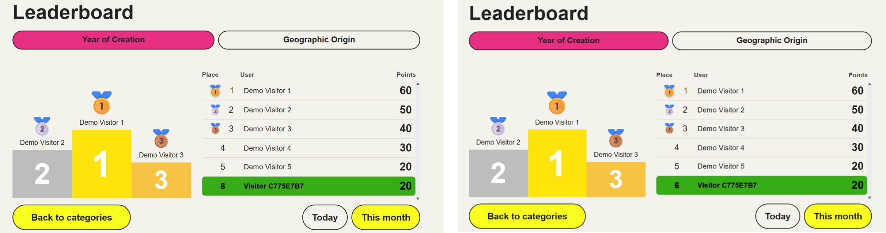
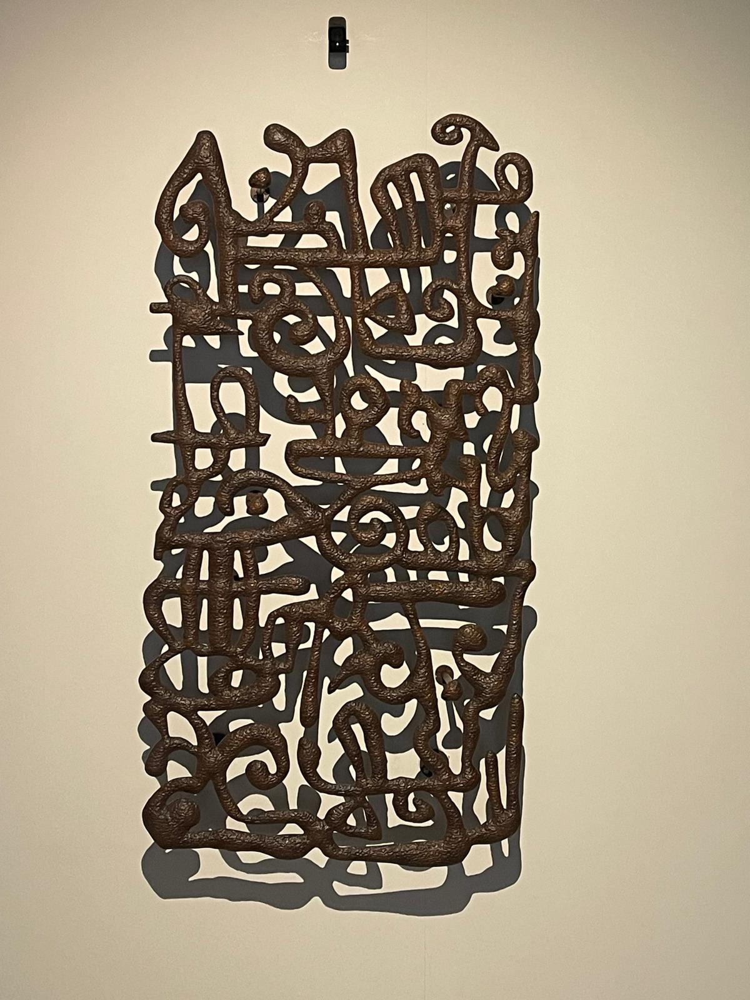
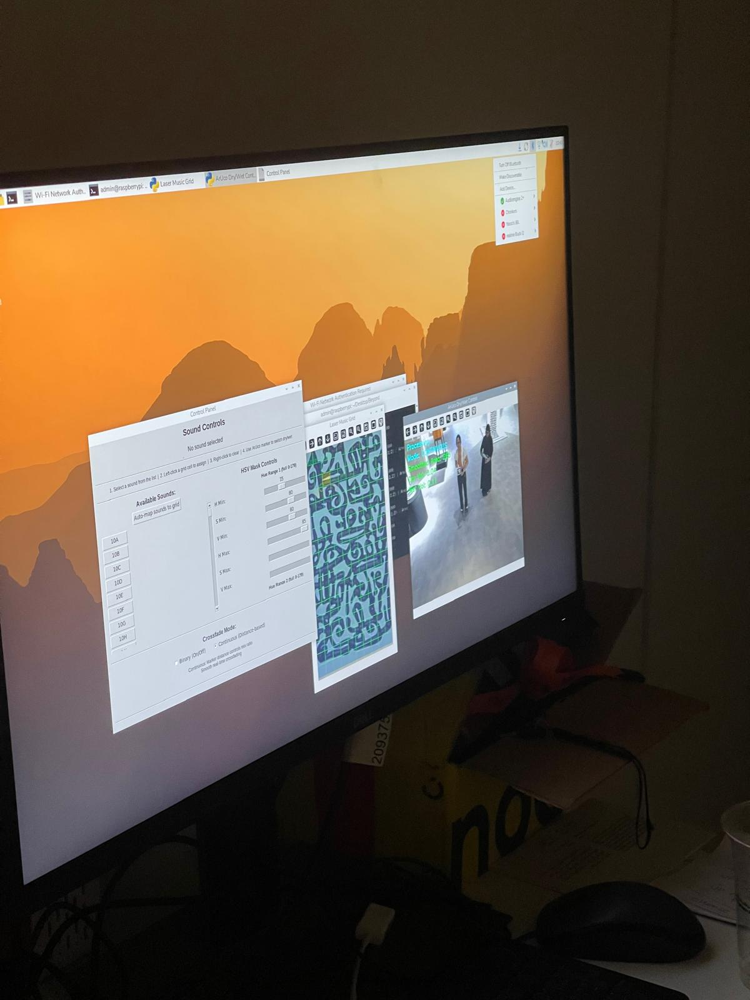

This week focused on digging deep into the loyalty points idea, where visitors get a specific number of points for answering questions correctly on the quiz. Initially, the plan was to use a physical card to store all the visitor's scores and points. However, physical cards have a high chance of getting lost, can easily get corrupted or damaged, and create ongoing restock costs. Hence, we decided to implement a software solution.
The original vision was to generate a digital pass directly in Apple Wallet or Google Wallet by having visitors tap their phone against a scanner at the end of the game. This couldn't be implemented because Apple Wallet requires an $99 year developer license to get passes, and there was no Android device available for testing Google Wallet.
The next idea was using a QR code at the end of the game that redirects visitors to a web page displaying their scores. However, this also couldn’t be implemented because connecting the raspberry pi to the local Wi-Fi network wasn't possible. Which led to a simpler solution, displaying a unique user code at the end of the quiz. Visitors take down their code, which gets stored in a database with their scores. Each time a visitor returns to the museum, the screen asks if they are a new or returning user. Returning users enter their code to save their new score and view their past results. A quick feedback feature was also added at the end of the game to help measure how fun and clear the experience is for players.

Another Feature, this week is the leaderboard feature. Each quiz category now has its own dedicated leaderboard to view daily and monthly rankings. A scroller option was also added so visitors who don't make the top list can still check their exact rank position.

There are more features that we are considering. One is a monthly analytics dashboard that displays detailed player metrics, such as which questions users get right or wrong most frequently and their overall accuracy percentages. This data could help with museum analytics, revealing if lower scores on specific artworks relate with the placement or lighting.
Another feature, which is a new category, is a storyline mode that follows the exhibition from Gallery 1 to Gallery 7. In this mode, the game won't reveal or unlock the next question until you answer the current one correctly. If you get a question wrong, the quiz closes your attempt and tells you to go explore the exhibition a bit more before coming back to try again and continue the story.
Out of all the exhibitions and museums visited so far, this one has the most interactive steup. To interact with the artwork, you pick up a handheld reader that projects a laser pointer onto the artwork. As you move the laser across different parts of the artwork, it triggers different sounds, it almost feels like you're playing a musical instrument using light.
At first, I thought there might be a sensor inside the object itself, but the camera setup changed my mind. I think they are using computer vision algorithm that tracks the laser light on the artwork and plays the sounds based on where the pointer is moving

